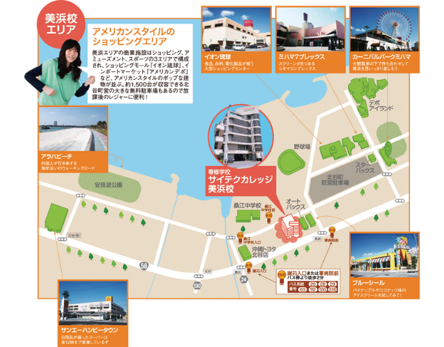

アクセス
美浜へのアクセス
那覇空港より国道58号を北向けに50分程走行し、謝苅交差点を過ぎると左側に見えてきます。
沖縄自動車道の場合は豊見城・名嘉地IC～北中城ICを利用し、北中城ICから美浜で15分で到着します。
アメリカンスタイルのショッピングエリア
美浜エリアの商業施設はショッピング、アミューズ面と、スポーツの３エリアで構成され、ショッピングモール『イオン琉球』、インポートマーケット『アメリカンデポ』など、アメリカンスタイルのポップな建物が立ち並んでいます。役15,00台が収容できる北谷町営の大きな無料駐車場もあるので、放課後のレジャーに便利！
